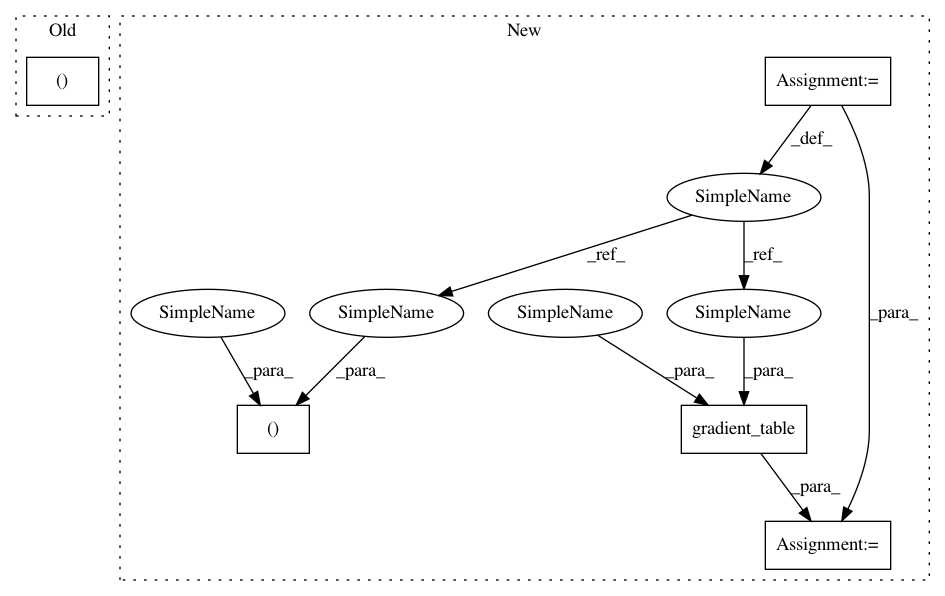

98d1c553481256c1acb5cc4e92908cdf1177aef6,dipy/reconst/tests/test_sfm.py,,test_SparseFascicleModel,#,16
Before Change
def test_SparseFascicleModel():
data, gtab = dpd.dsi_voxels()
sfmodel = sfm.SparseFascicleModel(gtab)
sffit = sfmodel.fit(data[0, 0, 0])
After Change
def test_SparseFascicleModel():
fdata, fbvals, fbvecs = dpd.get_data()
data = nib.load(fdata).get_data()
gtab = grad.gradient_table(fbvals, fbvecs)
sfmodel = sfm.SparseFascicleModel(gtab)
sffit = sfmodel.fit(data[0, 0, 0])
pred = sffit.predict(gtab)
In pattern: SUPERPATTERN
Frequency: 3
Non-data size: 5
Instances
Project Name: nipy/dipy
Commit Name: 98d1c553481256c1acb5cc4e92908cdf1177aef6
Time: 2014-12-12
Author: arokem@gmail.com
File Name: dipy/reconst/tests/test_sfm.py
Class Name:
Method Name: test_SparseFascicleModel
Project Name: nipy/dipy
Commit Name: 0a98c14001045bac886a684ed1a1998551fb5fe2
Time: 2015-10-12
Author: arokem@gmail.com
File Name: dipy/reconst/tests/test_dti.py
Class Name:
Method Name: test_predict
Project Name: nipy/dipy
Commit Name: 98d1c553481256c1acb5cc4e92908cdf1177aef6
Time: 2014-12-12
Author: arokem@gmail.com
File Name: dipy/reconst/tests/test_sfm.py
Class Name:
Method Name: test_SparseFascicleModel
Project Name: nipy/dipy
Commit Name: b9aac6f4f32d755595c577c5fc5ac0936a914031
Time: 2020-01-03
Author: skab12@gmail.com
File Name: doc/examples/restore_dti.py
Class Name:
Method Name: